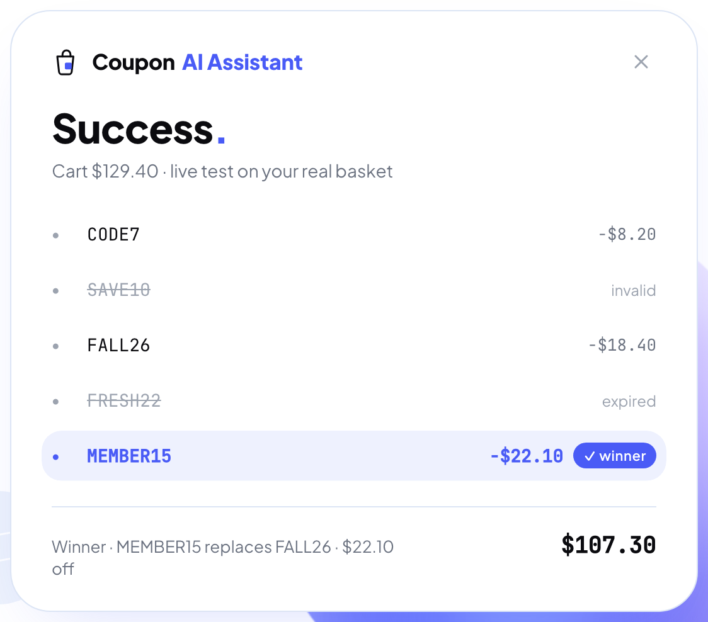

ИИ чуть не оформил заказ за пользователя
Что пришлось ему запретить
На какие подводные камни напоролись
Как оптимизировали затраты и скорость
3 истории, 5 уровней, 8 выводов

Continue to checkout
так нельзя